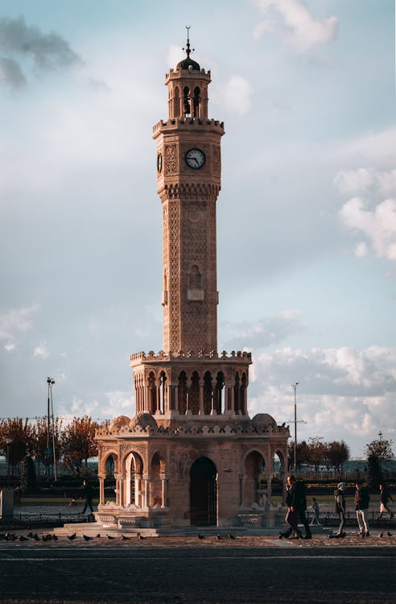
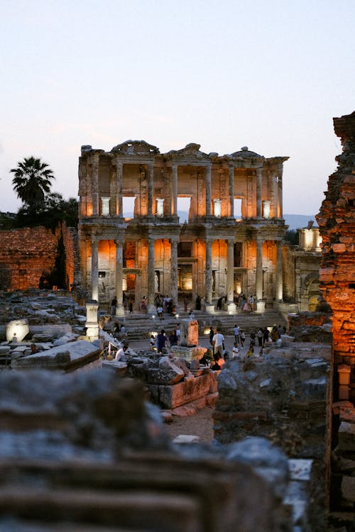
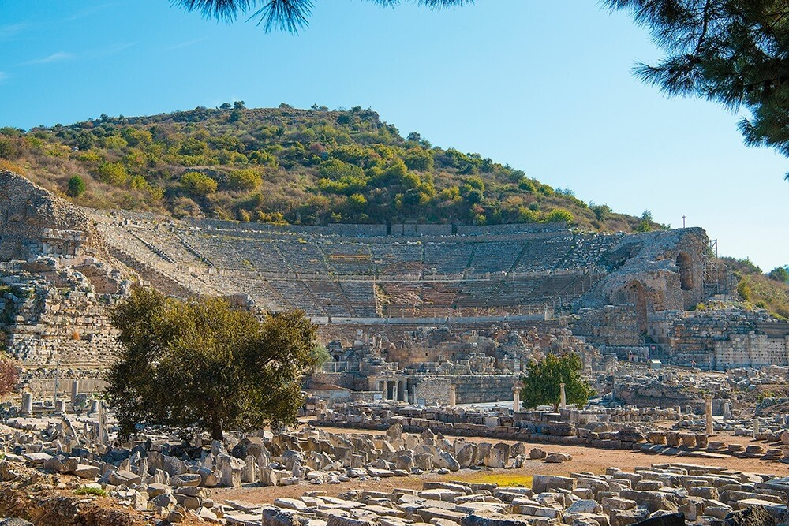
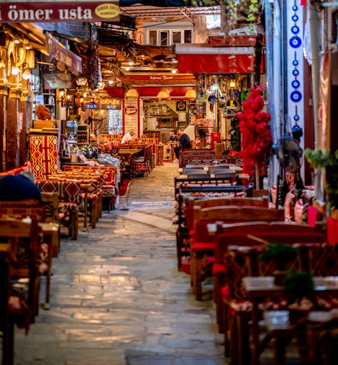
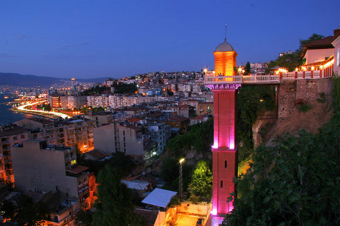
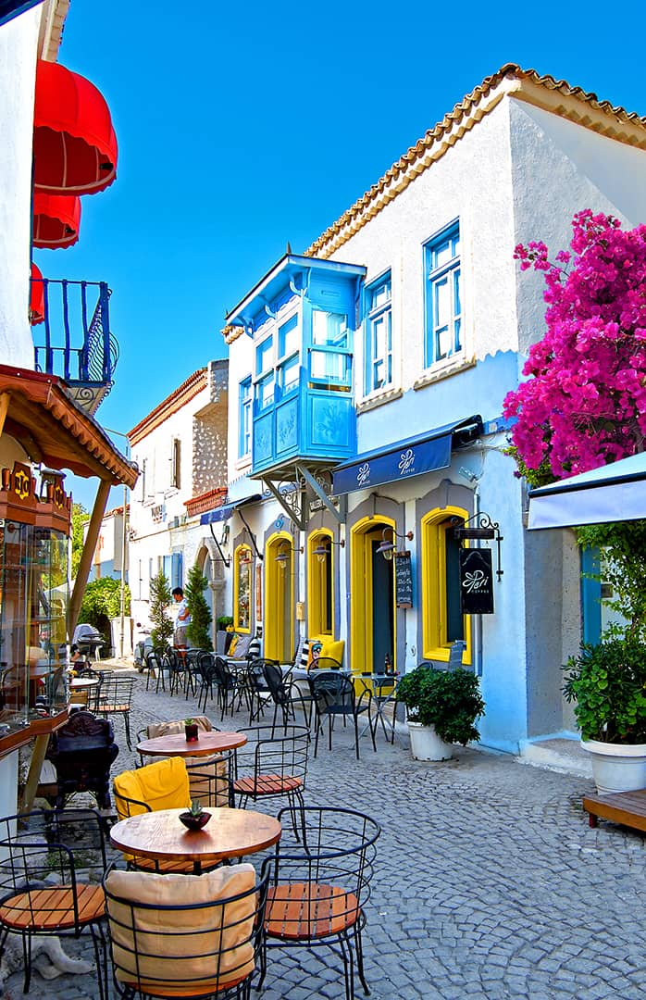
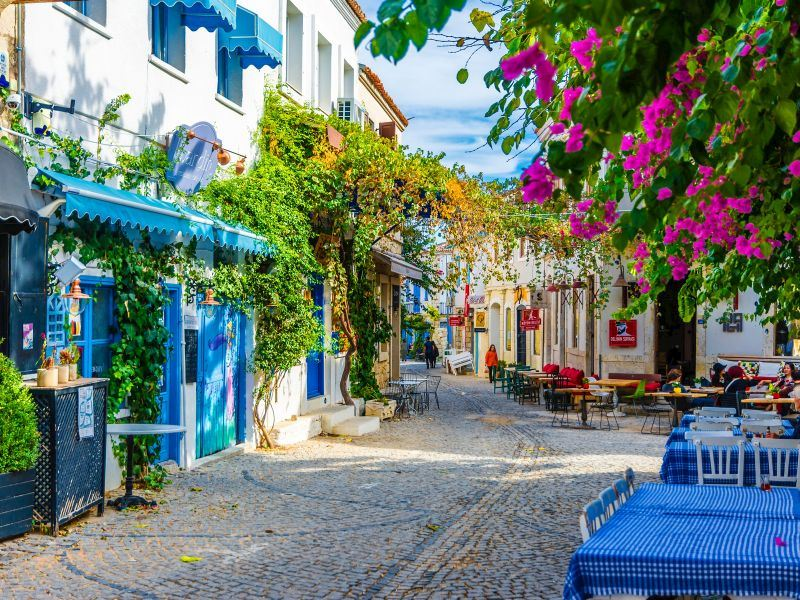
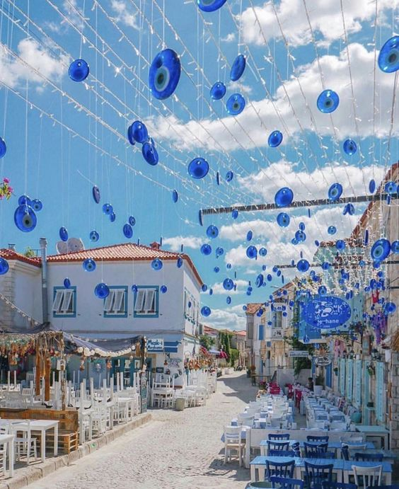

Izmir
Welcome to Izmir
Welcome to Izmir, a stunning coastal city in Turkey, where history and modernity come together to create an unforgettable experience. Known as the "Pearl of the Aegean", Izmir offers visitors a unique blend of ancient wonders, beautiful beaches, lively festivals, and vibrant nightlife. From the ancient city of Ephesus to the lively streets of Alsancak, Izmir is full of places to explore and moments to cherish.
Whether you're here for a relaxing beach escape, an adventurous exploration of historical sites, or a taste of the local flavors, Izmir has something for everyone. Get ready to dive into a city where tradition meets innovation, all set against the breathtaking backdrop of the Aegean Sea.
-

Izmir Clock Tower İzmir Clock Tower: A Timeless Landmark
Located at the heart of Konak Square, the Izmir Clock Tower stands as one of the city’s most iconic symbols. Built in 1901 to celebrate the 25th anniversary of Sultan Abdulhamid II’s reign, this beautiful, intricately designed clock tower has become a must-visit for anyone exploring İzmir. The tower, standing at 25 meters high, boasts Ottoman architecture with stunning details that showcase İzmir’s historical richness.
Surrounded by palm trees and vibrant city life, the area around the Clock Tower is perfect for sightseeing, photography, and soaking in the local atmosphere. Whether day or night, the Clock Tower is a captivating piece of history and a true İzmir landmark that reflects the spirit of the city.
-

Ephesus Library of Celsus Ephesus Ancient City: A Journey Through Ancient Civilization
Located near the town of Selçuk, Ephesus (Efes) is one of the most remarkable and well-preserved ancient cities in the world, making it a top attraction for visitors to İzmir. Dating back to the 10th century BC, Ephesus was once a major hub of trade, culture, and religion in the ancient world. Today, it offers a breathtaking glimpse into history with its grand ruins and monumental structures.
Ephesus Theater Highlights of Ephesus include the majestic Library of Celsus, the Great Theater with a capacity of 25,000 seats, and the Temple of Artemis —one of the Seven Wonders of the Ancient World. Walking through its marble streets, you’ll find temples, ancient baths, and even a Roman-era public restroom, each telling stories of a bygone era. Ephesus is a must-see destination for history enthusiasts and anyone looking to experience the grandeur of ancient civilization up close.
-

Izmir Kemeraltı Bazaar Kemeraltı Bazaar: The Heartbeat of İzmir’s Culture and Commerce
Kemeraltı Bazaar, located in the heart of İzmir, is one of Turkey's oldest and most vibrant markets, with roots dating back to the 17th century. Spanning a maze of lively streets and historic arcades, this bazaar offers a sensory journey through the sights, sounds, and flavors of traditional Turkish life.
Visitors can explore a wide range of shops, selling everything from spices, teas, handmade textiles, and jewelry to souvenirs and antiques. Alongside its bustling marketplaces, Kemeraltı is also home to charming coffeehouses, Turkish delight shops, and authentic eateries where visitors can sample local favorites like “Kumru” sandwiches and "Boyoz" pastries. Beyond shopping, it offers a window into İzmir’s culture and heritage, making it a must-visit destination for anyone exploring the city.
-

Izmir Historical Elevator Historical Elevator: A Scenic Landmark with a Unique Story
The Historical Elevator, or "Tarihi Asansör", is a cherished icon of İzmir, offering not only breathtaking views but also a captivating tale of connection and culture. Built in 1907 by the influential Jewish businessman Nesim Levi Bayraklıoğlu, this elevator originally served to bridge two distinct neighborhoods—Karataş at sea level and Halil Rıfat Pasha on the hilltop—sparing residents from climbing a steep 155-step staircase. This visionary structure soon became a beloved part of daily life, symbolizing the unity and resilience of the people of İzmir.
Adding to its charm is the legacy of Dario Moreno, a famed singer, musician, and actor who grew up in the vibrant Karataş district. Born into a modest Jewish family, Moreno rose to international fame, and his music—characterized by his rich voice and heartfelt delivery—brought a touch of İzmir to audiences around the world. Even as he gained recognition abroad, he remained deeply connected to İzmir and to the Karataş neighborhood, where he spent his childhood. His connection to the Historical Elevator, which he often used as a boy, became so iconic that the street leading to the elevator was later named “Dario Moreno Street” in his honor.
Fun fact: Dario Moreno's impact on İzmir's music scene is still felt today, with many of his songs remaining beloved classics in Turkish culture.
Musician Dario Moreno Today, visitors can walk up Dario Moreno Street and feel the echoes of his legacy, enjoying the nostalgic cafés and small artisan shops along the way. The elevator’s observation terrace offers a sweeping view of İzmir’s coastline, where locals and tourists alike can imagine the city as Moreno saw it, and listen to his music in the very place he once called home.
Fun fact: Many visitors bring their own speakers to play Dario Moreno’s songs, adding to the magical atmosphere of the spot.With its unique architectural design, cultural significance, and connection to one of İzmir’s most cherished artists, the Historical Elevator is not just a convenient means of transportation. It’s a poignant reminder of İzmir’s layered history, where diverse communities, cultures, and generations come together to create a city as harmonious and soulful as Dario Moreno’s songs.
-
Alaçatı: A Charming Coastal Getaway on the Aegean
Alaçatı, located on the Çeşme Peninsula near İzmir, is a picturesque coastal town celebrated for its stunning stone houses, vibrant bougainvillea-lined streets, and breezy Mediterranean atmosphere. Known as one of Turkey’s most beautiful and iconic towns, Alaçatı offers a unique blend of history, culture, and seaside relaxation that draws visitors from around the world.
Alaçatı’s historic architecture, cobbled streets, and windmills retain the character and charm of a bygone era. The town has become a popular destination for both local and international travelers, not only for its beauty but also for its bohemian vibe and lively atmosphere. It’s especially renowned for its cafes, boutique hotels, and artisan shops, each offering unique and authentic experiences.
Alaçatı is also famed for its windsurfing and kitesurfing spots, thanks to its strong, steady winds and shallow turquoise waters. Visitors can enjoy a range of water sports or relax on nearby beaches like Ilıca beach and Delikli beach, known for their crystal-clear waters and sandy shores.
Another highlight of Alaçatı is the Alaçatı Herb Festival, held each spring, where local farmers, chefs, and artisans come together to celebrate the region’s rich culinary heritage. The festival is a feast for the senses, featuring locally grown herbs, olive oil dishes, and traditional delicacies, along with music, folk performances, and cooking workshops.
Whether you're exploring its quaint alleyways, relaxing in a cozy café, or taking in the natural beauty of its coastline, Alaçatı promises a memorable experience with an enchanting mix of history, culture, and seaside elegance.
Izmir Alaçatı Izmir Alaçatı Izmir Alaçatı
Izmir City Cheat Card
| Feature | Details |
|---|---|
| Popular Tourist Areas | Çeşme, Alaçatı, Şirince, Foça, Selçuk |
| Historical Sites | Ephesus Ancient City, Agora, Bergama, Kadifekale, İzmir Clock Tower |
| Museums and Galleries | İzmir Archaeology Museum, İzmir History and Art Museum, Ephesus Museum, Atatürk Museum |
| Natural Attractions | Karagöl, İzmir Bird Paradise, Spil Mountain National Park, Dilek Peninsula National Park |
| Beaches | Ilıca Beach, Altınkum Beach, Ayayorgi Bay, Delikli Bay |
| Festivals and Events | İzmir International Fair, Alaçatı Herb Festival, İzmir European Jazz Festival |
| Shopping Areas | Kemeraltı Bazaar, Alsancak, Çeşme Marina, Alaçatı Boutiques |
| Must-Try Local Foods | Kumru, Boyoz, Lokma, İzmir Köfte, İzmir Bomba , Olive Oil Dishes |
| Nightlife | Alsancak, Kordon, Karşıyaka, Alaçatı Nightclubs and Bars |
| Scenic Spots | Kordon Coast, Historical Elevator, Çeşme Castle View, Şirince Village |